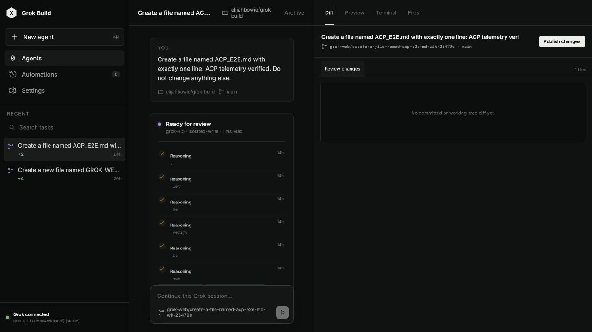
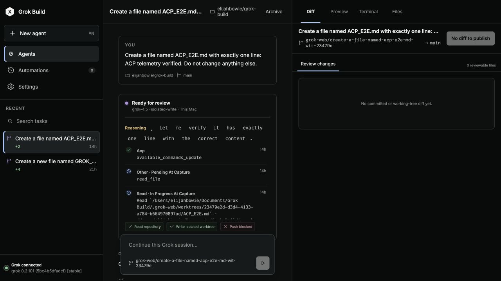
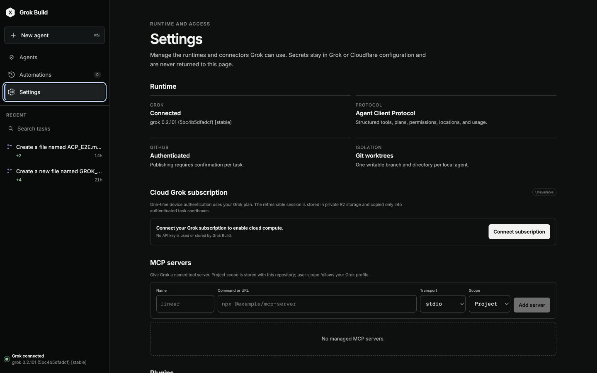
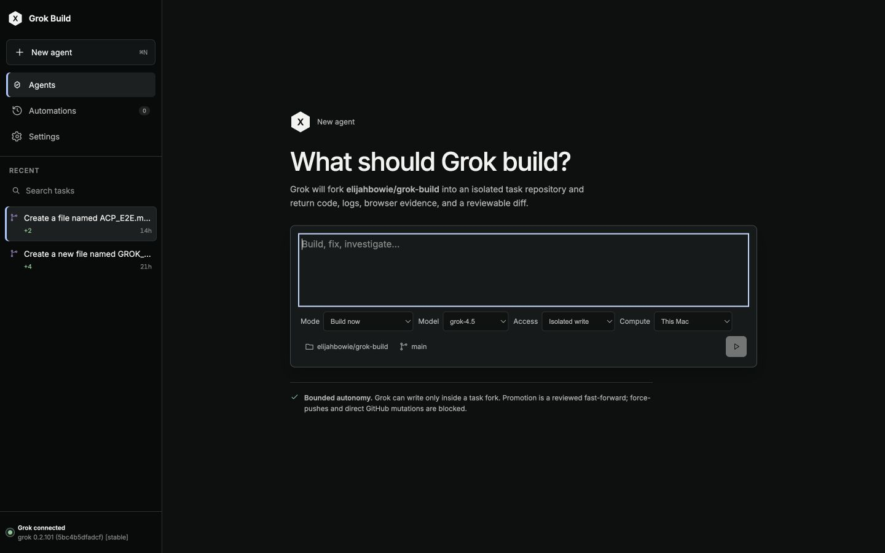
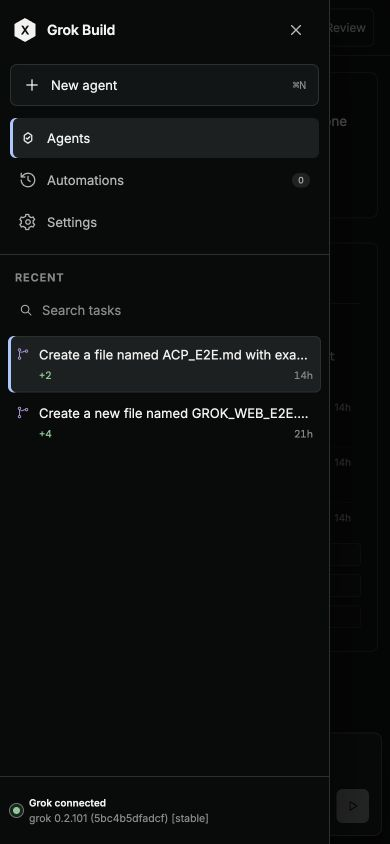
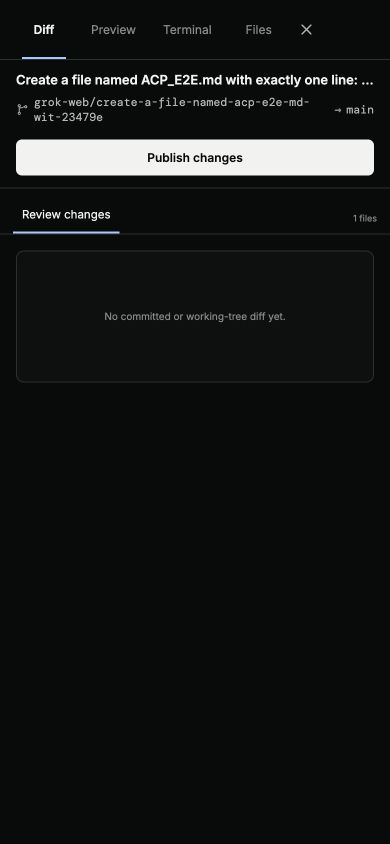

Solid product structure, but cramped transcript, tiny operational type, token-per-row reasoning, and weak target sizing.
Modern Interface Practice · iterative audit
Grok Build design polish
The working coding-agent experience was captured, scored, revised, and re-evaluated across desktop, compact, narrow, management, creation, review, and offline surfaces.
91.1/ 100 final independent score · threshold exceeded
Iteration record
Independent scorers rejected the pass: publish remained enabled while the Git diff was empty, and historical states looked live.
A fresh scorer passed the corrected state contract, focus-managed overlays, keyboard tabs, reflow, and evidence-first publishing.
Final rubric
| Category | Evidence | Score |
|---|---|---|
| Work-surface hierarchy & density | Rebalanced 3-pane grid; compact reasoning; quiet navigation; durable review remains prominent. | 16.6 / 18 |
| Core coding-agent workflow | Create, run, evidence, diff, terminal, files, preview, review, and publish surfaces remain intact and predictable. | 16.9 / 18 |
| State honesty & inspectability | No-diff publishing is disabled; captured historical states are named; offline copy identifies stale evidence risk. | 14.6 / 16 |
| Visual-system coherence | Semantic role tokens, 4px rhythm, consistent control/surface radii, and modality-only shadow layer. | 12.6 / 14 |
| Accessibility & input quality | Visible focus, skip link, focus-managed overlays, keyboard tabs, coarse targets, forced colors, reduced motion. | 12.5 / 14 |
| Responsive/adaptive behavior | 1440px, 768px, and 390px captures; sidebar and review become dismissible overlays; local scroll is preserved. | 8.8 / 10 |
| Trust, feedback & recovery | Evidence-first publish gating, bounded autonomy, undo/retry/offline language, and retained evidence are explicit. | 9.1 / 10 |
Before and after






Surface-by-surface health
- Main workspace: Healthy — clearer hierarchy, wider transcript, readable timeline, stable composer.
- Diff review: Healthy — durable output is prominent; publish remains a separate explicit action.
- Preview: Healthy — command input and start action use the shared control contract.
- Terminal: Healthy — retained-evidence purpose stays visible with readable code typography.
- Files: Healthy — changed-file selection remains distinct and locally scrollable.
- Settings: Healthy — runtime status, trust language, and connectors now scan as one coherent system.
- Automations: Healthy — definition and empty-state guidance remain explicit with calmer form density.
- New agent: Healthy — primary job, scope, model, access, compute, and autonomy boundary are visible before launch.
- Compact/narrow/offline: Healthy — reflow works at 390px; navigation/review overlays and stale-state recovery are explicit.
Evidence limit: screenshots and DOM inspection support the visual, semantic, focus, and reflow findings. They do not prove full WCAG conformance or every screen-reader/browser combination. No such compliance claim is made.
Implementation: web/dist/design-polish.css, web/dist/design-polish.js, minimal accessibility hooks in web/dist/index.html, and aligned offline/PWA assets.